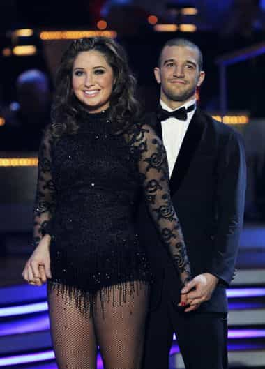
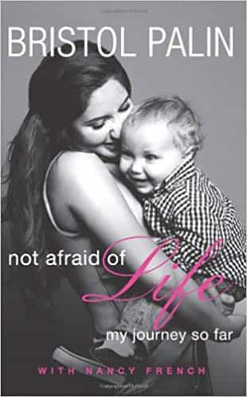

< < < Back
Bristol Palin’s Second Pregnancy Proves That The American Dream Has Died – Return Of Kings
After the birth of her first child, Bristol Palin became a highly remunerated public speaker, especially on motherhood, teens holding off on sex, and pregnancy. Before too long, she was bringing in up to $30,000 a speech. At the time she was otherwise working in a physician’s office, which raises serious doubts as to what experience and expertise audiences were forking out for.
Now everyone’s favorite abstinence raconteur is well into another pregnancy (is a further tilt on Dancing With The Stars on the horizon?). Claims by Palin that the pregnancy was “planned” coincide very nicely with a spirited defense of her actions. She’s made a fortune preaching standards she has no intention of keeping herself, after all.
In the meantime, for most Americans, hard work 1,000 times beyond Bristol Palin’s “efforts” will reap them little more than day-to-day survival for the entirety of their lives. What’s the lesson here? Being an attention whore, particularly when your parent is über-famous, is the new embodiment of the American Dream.
Lean in, girls, Bristol’s talking!

Rewarding someone whose biggest achievement is getting knocked up by letting them on Dancing With The Stars is not really conducive to stopping teen pregnancies.
It humors me, too, as it should you also, that Palin was courted by “women’s groups” to accost rostrums across America. A bizarre proclivity exists, whereby some woman, by virtue of having a vagina and some extremely weird experiences (usually linked to intense family privilege and reckless, self-inflicted consequences that create IQ-depleting headlines), is treated like some sort of super-coach.
One generally wouldn’t pay an ex-crack addict on Main Street to speak to them about substance abuse unless that person had undergone significant and meaningful transformation (because of themselves), so why pay the scion of a very wealthy and connected political attention seeker to talk about pregnancy and motherhood?
As she read out speeches composed of words with more syllables than she’s used to, her older brother was serving in Iraq for a relative pittance. Digging latrine pits somewhere, he was not even close to earning the massive dollar signs that enabled Bristol to buy a home and then sell it for a profit by age 21.
It riles me up to say this, but at least Kim Kardashian is not prone to the level of hypocrisy of a Bristol Palin, who profited immensely (and still does) from a teen pregnancy she then encouraged thousands of other girls not to go through. Her celebrity only blossomed after this turn to “do as I say, not as I do”, which Dancing With the Stars and a treasure trove of other lucrative attention-garnering and financially stupendous exercises show.
Her biggest achievement in life is getting knocked up in a tent

Her womb is both baby-maker and money-maker.
To me, Bristol’s mother, ex-Alaska Governor and Republican Vice Presidential nominee Sarah Palin, is anathema. That said, the minimum you must say about her in a positive sense is that she built up her own brand, however lobotomized it is. In defiance of this crude but self-made status, Bristol has rather openly suckled at the fame teat of her parent.
Her single most noteworthy action in life is getting knocked up in a tent. Everything else that followed, her appearances on reality television and Dancing With The Stars, plus her speaking career and God knows what else, flowed from her mother’s celebrity and her own coitus meets tent escapade with a guy called Levi. This fantastical series of events has become the financial coup of a lifetime for this otherwise talentless, brain-dead waste of space.
In her 20s now, and no longer the proverbial teen mom, Bristol has endeared herself to the world by shacking up with another baby daddy, a Medal of Honor winner, and then promptly splitting with him. At least with Levi Johnston, her first sperm donor, the relationship didn’t fizzle out completely until after their son was born.
If Bristol Palin had been Bristol Smith or Bristol Taylor or Bristol Noname and gotten pregnant twice to different men, she’d most likely be living in a trailer park and on welfare. The best she could probably hope for would be a turn on some MTV teen motherhood program, albeit only for the first pregnancy.
Want job and financial security? Ask Bristol

Lol.
Throughout their lifetime, millions of college-educated Americans are almost guaranteed to lose their jobs through outsourcing, hostile corporate takeovers, or automation. In one year, a professional hypocrite like Bristol Palin can earn what an engineer, lawyer, or doctor makes in ten or twenty.
And for doing what? As many categories of highly skilled and competent professionals burn themselves out and clock in the hours to pay off their mortgages and get braces for their kids, people like Bristol Palin (and this time you can add the Kardashians) own personal goldmines, purely by encouraging the regression of society through their examples of how to live and “earn.”
If suffering under the oppressive heat from the bank that’s financing your home (or looking over your shoulder in your work cubicle for the next round of layoffs) counts as the American Dream, then I guess it’s alive and well. Should that not be the case, it’s clear that Bristol Palin knows what the American fantasy is all about.
Read More: Pregnancy Is No Excuse To Be Fat And Gross